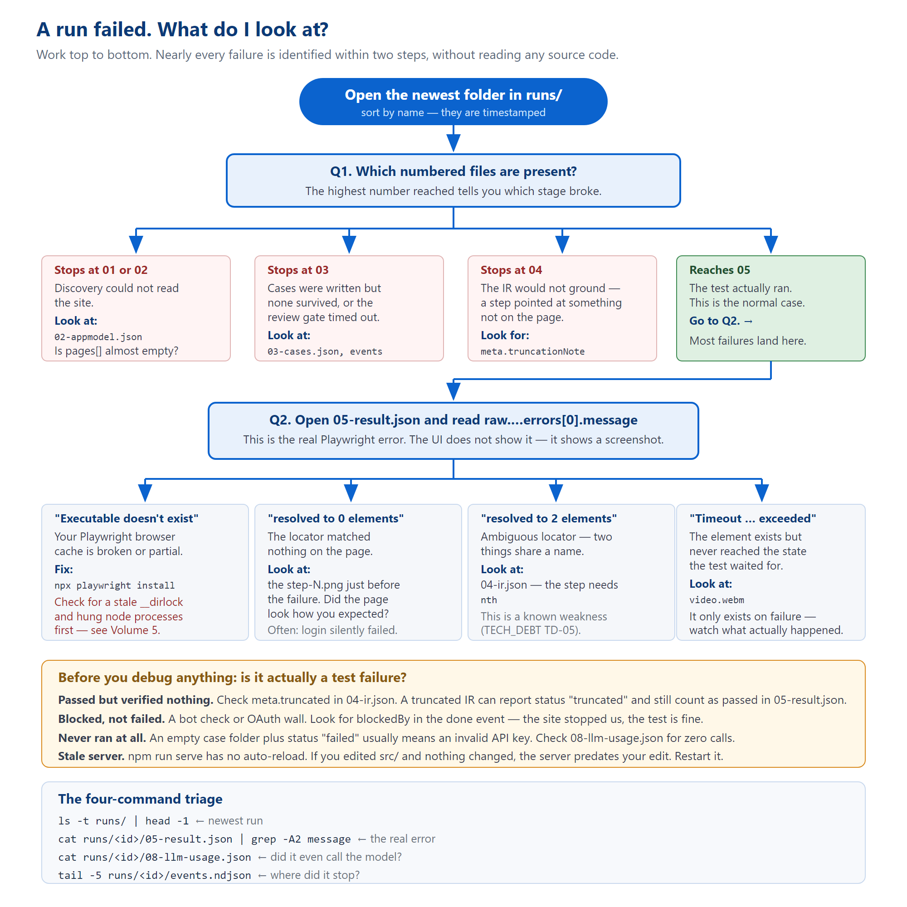

How to work out what went wrong, yourself
[[TOC]]
Start here. Work top to bottom. Most failures are identified within two steps and without reading any source code.

Figure 1 — from "a run failed" to a cause, using only the files on disk.
ls -t runs/ | head -1 # newest run cat runs/<id>/05-result.json | grep -A2 message # the REAL error cat runs/<id>/08-llm-usage.json # did it even call the model? tail -5 runs/<id>/events.ndjson # where exactly did it stop?
runs/<id>/05-result.json → raw.suites[0].specs[0].tests[0].results[0].errors[0].messagePeople routinely debug from a picture when the exact error was sitting in a file the whole time.
Four situations look like test failures and are not. Check these before investigating anything.
Check meta.truncated in 04-ir.json. If the compiler could only ground the first two steps, the test runs two steps and reports success. Worse: 05-result.json records passed: status === "passed" || status === "truncated" — so a truncated case counts as passed in that field. The honest status is in 07-suite-summary.json.
meta.truncationNote tells you where it gave up and why.
A bot check, a CAPTCHA, or an OAuth wall. Look for blockedBy in the done event. The site stopped us; the test is fine. Note that blocked overrides passed in the event but does not rewrite 05-result.json — so the file and the UI can legitimately disagree.
An empty case directory alongside a failed status usually means the run never reached the browser. Check 08-llm-usage.json: zero calls with a failed status normally means an invalid or exhausted API key.
problems.md in blunt terms: "You were told your website has failing tests when the truth was that your API key was invalid." Always confirm the run actually executed before you go looking at the site under test.
npm run serve runs tsx once and has no watch or reload. A running server keeps executing whatever code was in memory when it started. Editing src/ changes nothing until you restart it.
There is a documented incident where a fix was verified offline, and a live run afterwards still showed the exact pre-fix behaviour — because the server process was over an hour older than the edit. Before judging any source change against a live run, check that the server started after your edit.
This is a real diagnosis from 1 September 2026. It is included because the shape of it is typical: the visible symptom was three layers away from the cause, and every clue needed was already on disk.
Every test run produced a completely white screenshot. Every run, every case. The same repository worked on a colleague's laptop.
05-result.json held the real error:
Error: browserContext.newPage: Executable doesn't exist at …\ms-playwright\ffmpeg-1010\ffmpeg-win64.exe
The chain: playwright.config.ts sets video: "retain-on-failure", so Playwright spawns ffmpeg the moment a page is created. Missing ffmpeg means newPage() throws in under a second — before any navigation. But screenshot: "on" still fires and photographs a page that was never navigated: a blank 1280×720 PNG, exactly 4,331 bytes, every time.
The UI served that PNG with a valid HTTP 200, so its onerror guard never fired and nothing hid it.
npx playwright install refused to start: a lockfile was held by two Node processes from the previous evening, still alive sixteen hours later having used two seconds of CPU between them. They were hung on a stalled download that never timed out. That is why every reinstall attempt for days had silently accomplished nothing.
After clearing the lock, the error changed to spawn EFTYPE. The binary was present, had a valid executable header, and matched the machine's architecture. It was simply 31,190 bytes short — a truncated download from the same stalled installer. Valid header, missing tail; Windows refuses to load it.
Fetching the file directly from the CDN took 1.8 seconds, which also proved the network had never been the problem.
05-result.json from the first run. The white screenshot was a symptom of a symptom.06-diagnosis.json, days earlier.| Error text | What it means | What to do |
|---|---|---|
Executable doesn't exist at … | Playwright's browser cache is missing or partial. | npx playwright install. If it hangs, check for a stale __dirlock and hung oopDownloadBrowserMain processes first. |
spawn EFTYPE / "not a valid application" | A binary is present but truncated or corrupt. | Compare its byte size against a fresh CDN download. |
resolved to 0 elements | The locator matched nothing. | Open the step-N.png just before the failure. Very often the login silently failed and you are looking at a login page. |
resolved to 2 elements | Two things share a name — a strict-mode violation. | The step needs an nth. This is a known weakness (TD-05). |
Timeout … exceeded | The element exists but never reached the expected state. | Watch video.webm. It only exists on failure, which is exactly when you want it. |
ReferenceError: __name is not defined | A named function inside a page.evaluate callback. | Inline it. Note this passes every unit test and only fails on a real server run. |
Element is not an <input> | A locator matched the <label> instead of the field. | Field actions should route through the field helper, not getByText. |
No semantic locator for target | A target had no usable identifying information. | Usually a grounding gap upstream; check 04-ir.json for that step. |
| 503 "the database is not configured" | No Supabase service-role key. | Expected without one. Runs still work; the library does not. |
| Every run parks forever, no error | MAX_CONCURRENT_RUNS is non-numeric → NaN → silent deadlock. | Check the value. Empty crashes at boot; abc deadlocks silently. |
| A prompt change has no effect | The LLM disk cache never expires. | The system prompt must be part of the cache key. Or clear runs/_cache/llm/. |
All defaults are in .env.example, which is worth reading in full — its comments explain why each limit exists.
.env into a document, a ticket, or a chat. It holds live API keys. .env.example is the file to share; it holds placeholders.
| Variable | Default | Notes |
|---|---|---|
GEMINI_API_KEYS | — | Comma-separated. Keys only stack quota if each is from a distinct Google project; two keys in one project do not. |
GEMINI_MODEL | gemini-3.6-flash | Used for the expensive stages. |
GEMINI_MODEL_LITE | gemini-3.1-flash-lite | Plan, concept labelling, failure analysis. |
| Variable | Default | What it bounds |
|---|---|---|
LLM_TIMEOUT_MS | 45000 | Per attempt. Worst case per call is this × the retry count. |
MAX_LLM_CALLS_PER_RUN | 60 | Hard cap across every stage. Actual spend lands in 08-llm-usage.json. |
MAX_IR_ATTEMPTS | 4 | IR compile retries per case. |
MAX_LIVE_EXTENSIONS | 5 | Browser replays per case. Each also consumes one IR attempt — raising one without the other starves convergence. |
MAX_CONCURRENT_RUNS | 3 | Concurrent Chromium instances. See the footguns in Volume 3. |
MAX_DISCOVERY_PAGES | 5 | How far the crawl goes. |
CREDENTIAL_WAIT_MS | 300000 | 5 minutes. Holds a concurrency slot the whole time. |
CASE_SELECTION_WAIT_MS | 600000 | 10 minutes. Same caveat. |
MAX_LOGIN_CASES | 1 | Stops the suite testing the login screen instead of the app behind it. |
APPMODEL_CACHE_TTL_MS | 30 min | Set to 0 while iterating against a site you are editing. |
DISCOVERY_HYDRATION_POLL_MS | 6000 | How long to keep re-checking a page that extracted zero elements. |
PLAYWRIGHT_TIMEOUT is read by playwright.config.ts but is not listed in .env.example. It defaults to 50,000 ms.
The rule, stated at the top of that block: every flag defaults to OFF; with all of them unset the server behaves exactly as it did before the phase that introduced them.
| Flag | Default | Effect |
|---|---|---|
ENABLE_CASE_SELECTION_GATE | false | The human review pause after case generation. |
AUTH_ENABLED | off | Supabase auth. Also needs DB_ENABLED — alone it logs a warning and everyone sees everything. |
DB_ENABLED | off | Gates only the run-row writes and shadow read. Not the library. |
NL_STEPS_ENABLED | false | "Write it for me" in the step editor. |
GATE_CASE_EDIT_AI | false | "Ask for a change" at the review gate. |
RUN_RETENTION_DAYS | 0 (off) | Prunes old terminal runs. Hard 24-hour floor regardless of the value. |
TEST_USERNAME / TEST_PASSWORD | — | Suppresses every credential prompt, everywhere. |
SIGNUP_ENABLED is the one exception — it defaults to ON.
SIGNUP_ENABLED=false turns it off. The justification is that the sign-up screen only exists when AUTH_ENABLED=true, which is itself off — so the shipped default is still "no sign-up".
POST /api/auth/signup is unauthenticated by necessity and creates real accounts using the service-role key. Its rate limit (5 per 15 minutes per IP, in-process) is described in the source as "a speed bump, not access control".
.env.example is in capitals for a reason: set this to false before exposing this server beyond localhost.
A group of MAX_LITE_* variables bound how much of a site's model goes into a prompt. They exist because a rich site with no caps produced a 17,000-line model JSON and got a 413 from Gemini. The defaults sit above every page this project has actually sampled (87 elements, 2 forms, 18 nav nodes), so they only engage on a genuinely richer site.
npm test — runs tests/**. These are the platform's own unit tests.playwright.config.ts — has its testDir pointed at runs/. It runs the generated tests for the site under test.
runs/. "The tests are failing" is an ambiguous sentence here — say which runner.
| Area | Files | Notable |
|---|---|---|
| Discovery & DOM | 5 | genericClickables launches real Chromium; authCrawl spins up a local HTTP server |
| IR & grounding | 12 | grounding.test.ts is the largest file in the suite at ~1,050 lines |
| Cases & strategy | 7 | Selection, scoping, the gate |
| Generate / execute / diagnose | 6 | Includes secret-scrubbing |
| Credentials & secrets | 4 | credentials.test.ts ~737 lines |
| Server / API / storage | 5 | apiContract uses supertest against the real app |
| Auth & tenancy | 3 | tenancy.test.ts — a two-org isolation matrix, 31 tests |
| Step editor | 5 | Round-trip and drift checks |
| LLM plumbing | 2 | Backoff, budget |
| Frontend contract | 2 | The only automated checks on public/ — see Volume 4 §8 |
.github/workflows/test.yml runs tsc --noEmit and npm test on every push and pull request. It is not a merge gate, so a red run can still merge; run them yourself before calling anything done (TECH_DEBT.md TD-20). An earlier edition of this volume said there was no CI at all — that was wrong, and it was wrong because the claim was taken from the docs instead of from .github/.
npx tsc --noEmit # must be clean npx vitest run # note the pass count if it changed
.filter({ visible: true }) incident (Volume 2, §7) passed type-checking and a unit test while being a complete no-op, because both checks only inspected the emitted string.
TECH_DEBT.md is the single owner of this list — 150 KB, entries TD-01 upward, most citing a real run ID. Do not start a second list anywhere. A sample of the ones most likely to affect you:
| ID | What |
|---|---|
| TD-01 | A "deterministic" guard written as a regex over model-authored prose is not deterministic. The reference example of a whole class of bug. |
| TD-05 | Duplicate (role, name) pairs make grounding ambiguous — the source of most resolved to 2 elements failures. |
| TD-07 | The locator algorithm is written twice — in targetResolver.ts and in the generator's injected helper — and nothing pins them equal. |
| TD-14 | runs/ is served publicly. The reason credentials must never touch disk. |
| TD-20 | CI runs the checks on every push, but nothing enforces that it passed before a merge. |
| TD-22 | The LLM disk cache never expires; a cache key missing a dimension serves a wrong answer forever. |
problems.md is a different kind of document — a dated forensic audit (18 August 2026) of every run directory then on disk, with statistics and root-cause rankings. It is not a second defect register, and its numbers are a snapshot.
SITE_STORE_VIEW_SPEC_v2.md as a description of the system. It is a 40 KB design specification for a restructuring that has not been implemented. It is easy to mistake for documentation of the current code.
| File | Size | Owns |
|---|---|---|
CLAUDE.md | 13 KB | Working rules and sharp edges. Capped at 200 lines. The best thing to read first. |
README.md | 23 KB | What this is and how to run it. |
ARCHITECTURE.md | 38 KB | The formal file map and data contracts. |
DECISIONS.md | 55 KB | Why each choice was made, and what was rejected. |
TECH_DEBT.md | 151 KB | What is broken. The largest document in the repository. |
docs/phases/ | 16 reports | A build log. Each ends with what it deliberately did not fix. |
docs/EDITABLE_IR.md | 15 KB | A walkthrough of the case-editing flow. |
PROJECT_OVERVIEW.md's frontend section is wrong on three verifiable points: it gives app.js as ~4,400 lines (it is 5,105), says six views exist with three unbuilt stubs (there are nine, and all three are built), and says the UI uses Server-Sent Events (it polls).
ARCHITECTURE.md is right about polling but still calls three built routes "not yet built".
CLAUDE.md says plainly: don't treat a number in these docs as current without re-checking it. That applies to this document too.
08-llm-usage.json — zero calls means it never started properly.tail -5 events.ndjson.05-result.json, the errors[0].message path.meta.truncated in 04-ir.json.blockedBy in the done event.step-N.png, then video.webm if there is one.src/?runs/_cache/llm/.npx playwright install, and check for a stale lock first.TECH_DEBT.md for a keyword from the error.runs/<id>/.